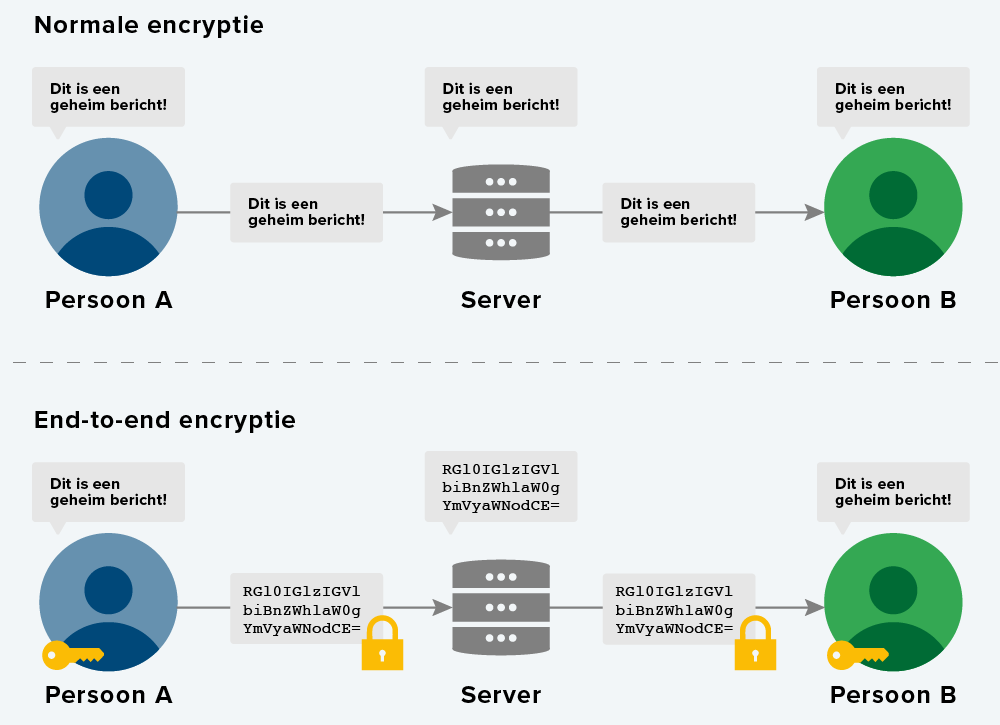

Zwakheden in de architectuur
De meeste apparaten bestaan uit een fysieke laag, een logische laag en een toepassingenlaag. Bij zwakheden in de
architectuur is er een fout in een of meerdere lagen waardoor hackers ‘een stuk’ van het apparaat ook beheren. Dit
noemen we een lek.
Een voorbeeld is de camera van je telefoon. Wanneer een app de camera probeert te
gebruiken, toont deze eerst een melding waarin om toestemming wordt gevraagd. Mogelijk vindt een hacker een manier
om de camera te gebruiken zonder dat de pop-up verschijnt.
Bij een zwakte in de logische laag van de camera is
het mogelijk voor hackers om te mee te kijken via je camera.
Zwakheden in de communicatie

Verschillende apparaten zijn met elkaar verbonden via internet. Zo kunnen ze met elkaar communiceren, maar dit moet wel veilig gebeuren.
Man-in-the-Middle aanval
Bij het aanvragen van een nieuwe ov-chipkaart wordt er gevraagd naar gegevens. Je gaat er van uit dat jou gegevens alleen en direct naar de website. Zie op de foto. Met een man-in-the-middle aanval kan de verbinding tussen twee apparaten afgeluisterd worden, dit heb je niet door.
HTTPS
De protocol HTTPS zorgt voor een beveiligde verbinding tussen de client en de server. HTTPS-verbindingen versleutelt de gegevens die worden verzonden, wat de kans op een man-in-the-middle-aanval aanzienlijk vermindert. Hier heeft de beheerder van de website wel een SSL-certificaat voor nodig. Dit certificaat bevat informatie over de website-eigenaar. Zo weet de client wie er achter de server zit waarmee hij verbinding maakt.
End-to-end encryption
End-to-end encryption gaat nog een stap verder dan een HTTPS-verbinding. Bij end-to-end encryption worden de gegevens versleuteld voordat ze op het internet zijn! Jij en de server zijn de enige met de sleutel. Hackers zullen dat alleen de onversleutelde gegevens in kunnen zien en blijven achter met een lange tekst letters en cijfers.
Zwakheden bij gebruikers
In de meeste gevallen zijn het de gebruikers die de zwakke schakel zijn. Zwakke wachtwoorden bijvoorbeeld. Mensen
kiezen vaak simpele wachtwoorden die makkelijk te onthouden zijn, zoals qwerty of gewoon je naam. Helaas zijn deze
wachtwoorden makkelijk te kraken. Hackers kunnen het gemakkelijk vinden en inbreken in uw account.
Hackers
kunnen programma's gebruiken die duizenden wachtwoorden per seconde uitprobeert: brute force noemen we dit.
Er zijn meerdere manieren hoe gebruikers en diensten brute force tegen gaan:
- Hoe meer tekens, hoe veiliger. Bij een lang wachtwoord is het al snel niet meer de moeite waard om er een brute force aanval op los te laten.
- Hoe meer soorten tekens, hoe veiliger. Hoe complexer het wachtwoord, hoe meer mogelijkheden een hacker moet inzetten om het ingewikkelde wachtwoord te vinden.
- Gebruik geen voor de hand liggende woorden, zoals woorden in een woordenboek, de naam van de website of je eigen naam of geboortedatum.
- Gebruik voor iedere website of dienst een ander wachtwoord.
- Pas je wachtwoorden minimaal één keer per jaar aan.
Passwordgenerator is een website die een wachtwoord genereert naar keuze. How Secure Is My Password? is een website die laat zien hoelang een computer er over zou doen om je wachtwoord te kraken en geeft ook tips en advies over sterke wachtwoorden.
Technieken
Hackers en criminelen hebben vaak het doel om achter jou persoonlijke gegevens te komen. Er zijn twee veel gebruikte technieken: Social engineering en Phishing
.- Social engineering is een techniek waarbij de aanvaller de mensen ‘bewerkt’. Ze maken hier gebruik van psychologische trucjes. Denk maar aan scammers die bellen via je telefoon. Ze zeggen dat je een enorme prijs hebt gewonnen en vragen om de gegevens van je bankrekening om het geld er op te zetten. Trap hier niet in! Je persoonlijke bank zou bijvoorbeeld nooit vragen om je pincode. Geef die in normale situatie dus ook niet aan mensen via de telefoon. Het filmpje hiernaast laat goed zien hoe makkelijk mensen kunnen vallen onder Social engineering
- Phishing is een techniek die criminelen gebruiken in combinatie met social engineering. Bij phishing wordt het slachtoffer meestal per e-mail naar een valse website geleid. Deze e-mail en website zijn vaak nauwkeurig vervalst. Bijvoorbeeld een mail van de bank dat er iets mis is met je rekening. Om het op te lossen, moet je inloggen met je bankgegevens. Maar in plaats van u aan te melden bij een bank, geef je een aanvaller je inloggegevens geven!
Malware
Malware omvat alle programma’s die ontwikkeld zijn met kwaadwillende bedoelingen. Malware is er in verschillende vormen en soorten. De meest voorkomende zijn:
- The Trojan Horse. Net zoals in het verhaal van het Paard van Troje hebben gebruikers soms niet door dat ze malware binnenhalen omdat de malware verstopt zit in bijvoorbeeld de vorm van het downloaden van een website. Bij het ‘downloaden’ laat je dan The Trojan Horse in je software. Vanuit daar wordt The Trojan Horse bestuurt door de hacker en heeft nu bijvoorbeeld toegang tot je inloggegevens. De trojan horse is geen programma dat zichzelf verspreidt.
- De Worm werkt op de zelfde manier als The Trojan Horse maar verspreidt zichzelf automatisch. Niet alle
wormen hebben een slecht einddoel. Maar omdat ze altijd zelf verspreiden hebben ze een negatieve invloed op het
computernetwerk.
Een bekende worm is de ILOVEYOU worm. De worm infecteerde in 2003 meer dan 50 miljoen systemen in 10 dagen. Op dat moment was het ongeveer 10% van alle systemen in de wereld. Zie het filmpje hiernaast voor meer uitleg. De worm wijzigt bestanden op het systeem en verspreidt zich via e-mail.
Dit filmpje laat goed de impact van de ILOVEYOU worm zien. - Een virus is geen op zichzelf staand programma zoals een worm. Virussen infecteren bestaande software op dezelfde manier als echte virussen mensen infecteren. Geïnfecteerde software veroorzaakt schade en verspreidt zich naar andere computers. Wormen nestelen zich meestal ook in bestanden. Een worm verschilt van een virus doordat de worm zelf een compleet computerprogramma is. Het bestand waarin het zich bevindt, is precies waar de worm zich verbergt.
- Spyware is een type malware dat informatie over het computergebruik probeert te achterhalen. Dit wordt vervolgens, vaak via internet, doorgegeven aan de maker van de spyware.
- Adware. Het doel van adware is het weergeven van advertenties op je computer, dit kan dus ook legaal
zijn.
Maar vaak wordt adware gebruikt om ongewenste reclames te geven. Vaak bevat adware ook techieken die in spyware zitten. Op die manier kan adware gerichte reclames aan de gebruiker voorschotelen. - Ransomware is een speciaal soort malware, die vaak een systeem binnendringt als Trojan horse of door middel van een worm. Als ransomware eenmaal op een systeem staat, versleutelt het bestanden. Hierdoor zijn deze bestanden niet meer te gebruiken. Vervolgens verschijnt er een melding dat de gebruiker een geldbedrag moet betalen, om weer toegang te krijgen tot de versleutelde bestanden.